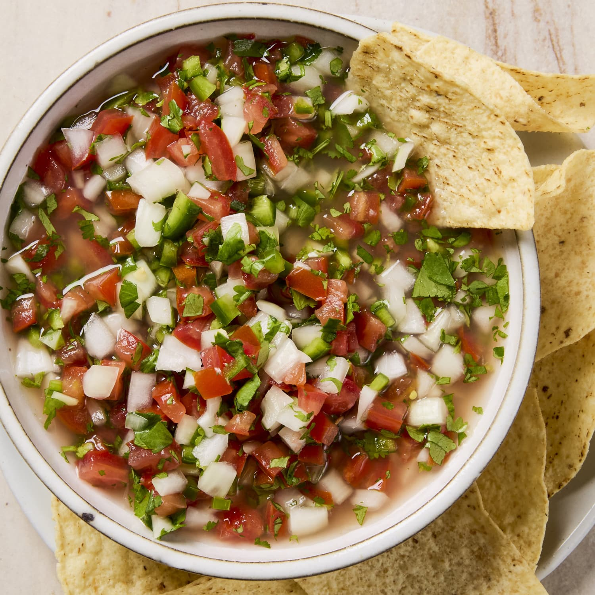

Home
Pico de gallo

How to prepare homemade pico de gallo.
This recipe is a great side dish. Goes well as a dip with tortilla chips.
Ingredients
- 4 ripe Roma tomatoes, finely diced
- 1/2 small white onion, finely diced
- 1-2 fresh serrano chiles, finely chopped
- 1/4 cup fresh cilantro, finely chopped
- Freshly squeezed lime juice
- 1/2 teaspoon salt
Steps
- Prepare the vegetables. Dice the tomatoes and onion into small, even pieces. Finely chop the serrano chiles and cilantro.
- Combine. Add the tomatoes, onion, serranos, and cilantro to a bowl.
- Season. Squeeze in the lime juice and sprinkle with salt.
- Mix gently. Stir everything together without crushing the tomatoes.
- Let it rest. Allow the pico de gallo to sit for 10-15 minutes at room temperature. This gives the flavors time to meld.
- Taste and adjust. Add more lime, salt, or serrano if needed.